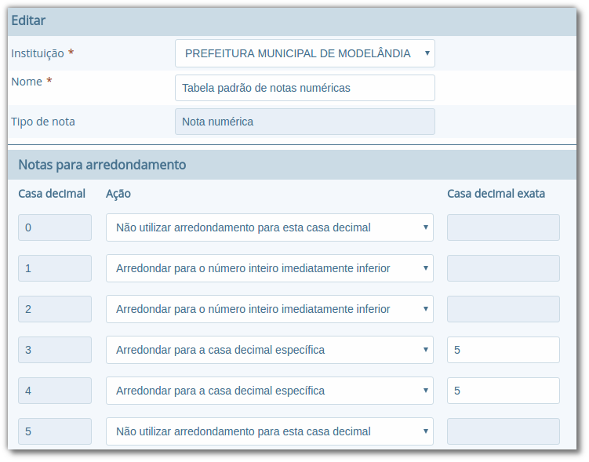
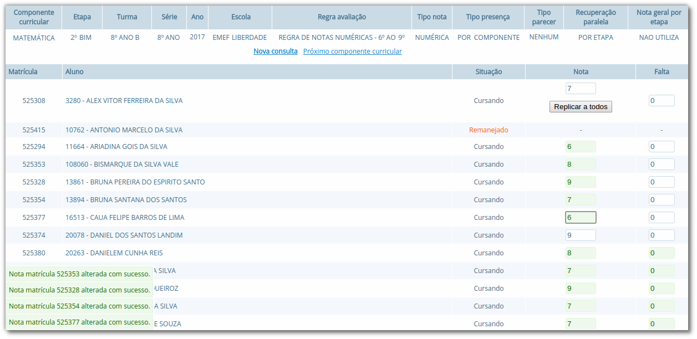
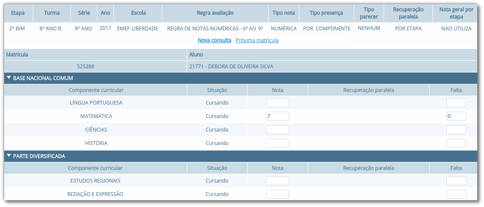

Regras de Avaliação e Notas
Nesta seção apresentaremos as formas como sistema efetua a avaliação dos alunos, quais os tipos e regras de avaliações possíveis e as formas de se configurar estas regras. Todos os cadastros das regras de avaliação necessitam de permissão de administrador, pois são configuradas em nível de instituição (prefeitura), ou seja, as regras se aplicam a todas as escolas da rede de ensino.
Tabelas de arredondamento
O cadastro de Tabelas de arredondamento serve para informar como será efetuado o lançamento das notas para os alunos, podendo ser do tipo Nota numérica ou conceitual. Para as numéricas, no campos da Casa decimal, virá preenchido com os valores de 0 a 9, para que na Ação possa ser definido se será arredondado para uma casa decimal superior, inferior ou exata, ou ainda se não será efetuado arredondamento para a casa específica. O campo Casa decimal exata, será habilitado somente no caso de a Ação ser de arredondamento específico. Para as notas do tipo conceitual, no Rótulo da nota deverá ser informado um valor alfanumérico o qual será correspondente a uma faixa mínima e máxima, a ser informada nos campos Valor mínimo e Valor máximo da linha tabela.
Localização: Módulo Escola > Cadastros > Tipos > Regras de avaliação > Tabelas de arredondamento
Um exemplo de configuração de notas do tipo numéricas pode ser visualizado na Figura 61.

Nota: Caso o Tipo da nota seja Nota conceitual, na tabela será exibido um campo chamado Descrição, o qual deve ser preenchido com uma informação relacionada ao rótulo da nota. Ex: Rótulo: CP. Descrição: Completou.
Fórmulas de cálculo de média
No cadastro de Fórmulas de cálculo de média, o usuário poderá configurar as fórmulas que serão usadas para calcular a média aritmética final e de recuperação do aluno. Este cadastro prevê uma forma simples de criar fórmulas reutilizáveis para diferentes regras de avaliação. A definição das fórmulas de cálculo de média são configuradas pela instituição (prefeitura), e portanto os usuários que não possuem permissão de administrador não poderão editar tal fórmula.
Localização: Módulo Escola > Cadastros > Tipos > Regras de avaliação > Fórmulas de cálculo da média
Para criar uma fórmula, as seguintes variáveis e símbolos aritméticos devem ser utilizados:
| Variável | Descrição |
|---|---|
| En | Trata-se da etapa (bimestre, trimestre) do ano letivo, onde n representa o número da etapa. Exemplo: E1 (Etapa 1, 1º Bimestre, etc). |
| Se | Refere-se à soma das notas em todas as etapas. |
| Et | Refere-se à quantidade de etapas. |
| Rc | Nota de recuperação. Obs.: apenas para fórmulas do tipo Média para recuperação. |
| RSPN | Nota de recuperação específica (com valor de 1 a 10). |
| RSPSN | Soma das etapas ou recuperação específica (utiliza a maior nota) com valor de 1 a 10. |
| RSPMN | Média das etapas ou média das etapas com recuperação específica (utiliza a maior nota) com valor de 1 a 10. |
| Símbolo | Descrição |
|---|---|
| ( ) | Trata-se do caractere parênteses e pode ser utilizado para circundar um cálculo prioritário. |
| * ou x | Trata do caractere alfanumérico asterisco e da letra x, que são utilizados para a operação de multiplicação. |
| / | Trata-se do caractere barra e é utilizado para a operação de divisão. |
| + | Trata-se do caractere da operação de adição. |
| < ou > | Trata-se do caractere utilizado para distinguir, respectivamente o sinal de menor (<) ou maior (>). |
Fórmula de média aritmética simples: Se / Et
- executa a soma das notas de todas as etapas divididos pela quantidade de etapas.
Fórmula de recuperação ponderada: (Se / Et * 0.6) + (Rc * 0.4)
- executa a soma das notas das etapas divididos pela quantidade de etapas multiplicado por 0.6, e soma isto a média de recuperação obtida multiplicada por 0.4.
Substitui menor nota por recuperação:
- Substitui menor nota (En) por nota de recuperação (Rc), em ordem decrescente. Somente substitui quando Rc é maior que En. Ex: E1 = 2, E2 = 3, E3 = 2, Rc = 5. Na fórmula será considerado: E1 = 2, E2 = 3, E3 = 5, Rc = 5.
Regras de avaliação
O cadastro de Regras de avaliação permite a configuração de parâmetros com os quais o aluno será avaliado, como o tipo de nota, a fórmula de cálculo de média, entre outros. Como pré-requisitos, uma regra de avaliação precisa de uma tabela de arredondamento cadastrada (para o tipo de nota desejada) e uma fórmula de cálculo de média, já vistos anteriormente.
Localização: Módulo Escola > Cadastros > Regras de avaliação
Uma regra de avaliação possui diversas opções e o resultado da avaliação e promoção do aluno baseado nas notas e faltas depende da combinação dessas opções. Na Figura 62 é demonstrado o cadastro de uma regra de avaliação por média e presença, e tipo de falta por componente curricular (disciplinas).

No quadro a seguir consta o detalhamento de cada opção do cadastro de regras de avaliação:
| Opção | Como funciona? |
|---|---|
| Sistema de nota | Define que tipo de nota (e que tipo de tabela de arredondamento) será utilizado para lançar notas nos componentes curriculares cursados pelo aluno. |
| Tabela de arredondamento de nota | Tabela que define faixas de arredondamento para o qual uma nota lançada no boletim do aluno será arredondada. |
| Progressão | Define o comportamento utilizado para promover ou reter (reprovar) o aluno. As opções são:
|
| Média final para promoção | Define a média necessária para um aluno ser aprovado em cada componente curricular (disciplina) cursado. |
| Média exame final para promoção | Define a média necessária para um aluno ser aprovado em cada componente curricular (disciplina) cursado após realização do exame final. |
| Fórmula de cálculo de média | Define a fórmula de cálculo de média final. |
| Fórmula de cálculo de recuperação | Define a fórmula de cálculo de média após a recuperação. Caso não seja definida uma fórmula, a regra não possibilitará que seja lançada uma nota de exame final (recuperação). |
| Porcentagem de presença | Define a porcentagem de presença mínima ao qual o aluno deve ter durante o período letivo. |
| Parecer descritivo | Define a regularidade e forma com o qual será informado o parecer descritivo. |
| Apuração de presença | Define se a presença (faltas) será lançada por componente curricular ou no geral (por etapa). |
| Nota máxima/mínima geral | Definem qual o valor de nota máxima e mínima permitidas no sistema. |
| Nota máxima exame final | Define qual o valor da nota máxima permitida no sistema para o exame final. |
| Qtd. Máxima de casas decimais | Define a quantidade máxima de casas decimais permitidas no sistema (ex.: 2 casas decimais, ou seja, 7.45) |
| Qtd. de disciplinas/matrículas de dependência | Estes dois campos definem qual a quantidade máxima de disciplinas de dependência em uma única matrícula; e quantas matrículas de dependência para um mesmo aluno são permitidas. |
| Reprovação automática | Marcando este parâmetro o sistema não apresentará campo de nota de exame para os alunos que não poderão alcançar a média necessária, reprovando os mesmos de forma automática. |
| Utilizar uma nota geral por etapa | Parâmetro responsável pela regra de média geral, já citada no processamento de históricos, e que define que a reprovação/aprovação do aluno depende de uma única média (englobando todos os componentes). |
| Permitir definir componentes em etapas específicas | Marcando este parâmetro, as telas de Séries da escola e Turmas, permitem que o usuário definida componentes curriculares específicos por etapa. |
| Aprovar alunos pela média das disciplinas | Marcando este parâmetro, alunos que deveriam ser reprovados, poderão ser aprovados caso a média de todas as médias dos componentes curriculares, for superior a nota de aprovação de exame final. |
| Permitir recuperação paralela | Define se haverá ou não recuperação paralela por etapa nos componentes curriculares em que a média final não foi atingida, permitindo ainda ser recuperação paralela de todas as etapas ou etapas específicas. Quando está opção for utilizada deverá ser informada a média necessária para realizar a recuperação no campo Média da recuperação paralela. |
A regra de avaliação usa outros valores especificados nos cadastros de Cursos e na Matrícula. Para o cálculo de porcentagem de presença, por exemplo, é necessário que a opção Hora/falta seja especificada no cadastro de Cursos. Esse campo é um valor decimal e representa o quanto uma falta unitária representa em horas. Para especificar uma hora/falta de 40 minutos, por exemplo, é necessário informar o valor 0,80 nesse campo.
A quantidade de faltas e notas a serem lançadas depende da quantidade de módulos cadastrados na escola ou na turma. Caso um Curso seja do tipo Padrão ano escolar, será possível lançar notas e faltas para a quantidade de módulos especificadas no Ano letivo da Escola, caso contrário, usa a quantidade de módulos especificados para a Turma ao qual o aluno está enturmado.
Lançamento de faltas e notas
O processo de lançamento de faltas e notas consiste na digitação de valores numéricos para as faltas e as notas, valores em texto para os pareceres descritivos e seleção de notas conceituais quando assim estiver configurado. As opções exibidas para o usuário são baseadas nas definições das Regras de avaliação vinculadas a cada Série ao qual o aluno está matriculado.
O lançamento das faltas e notas deve ser feito no menu de Lançamentos > Faltas e notas. Na Figura 63 é apresentada a página de seleção para lançamento de notas e faltas.
Localização: Módulo Escola > Lançamentos > Faltas e notas
Após abrir o menu de lançamento de notas e faltas é necessário preencher os campos para carregar (selecionar) a turma que se deseja efetuar os lançamentos. Quando o usuário selecionar um componente (disciplina) serão listadas para lançamento todas as matrículas referentes ao componente selecionado.
Durante o processo de lançamento é possível visualizar no console de mensagens no canto esquerdo inferior da página o status de cada alteração, mantendo assim o usuário informado de cada detalhe em tempo real.
Para salvar uma informação, basta informar o valor de uma falta, nota ou parecer e sair do campo com a tecla Tab ou apontando com o mouse no próximo campo, que a informação será gravada automaticamente. Para navegar entre os campos, deve-se usar também a tecla Tab e para excluir uma informação, basta apagar o valor do campo e sair do campo.

É possível também efetuar os lançamentos de todos os componentes (disciplinas) de uma matrícula. Para isso, não selecione nenhuma opção no campo Componente e no campo Matrícula selecione a matrícula desejada.
